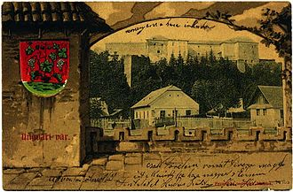
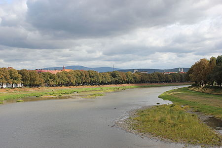
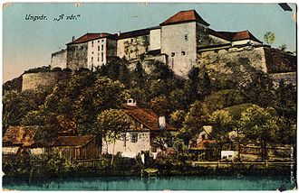

Ужгород - місто легенд)
Зміст
Символіка
Герб Ужгорода — офіційний герб міста, затверджений рішенням Ужгородської міської ради від 14 червня 1990 року. Являє собою німецький щит на синьому полі якого зображено, як із землі ростуть три золоті виноградні лози, що перетинають одна одну, з трьома листочками і двома гронами винограду на них.
Виноградна лоза в символіці міста відома з 1635 року, коли місто використовувало печатку з малюнком виноградного куща з трьома лозами та двома гронами. Герб на печатці обрамлював напис: «Sigillum civitatis Ungvariensis». Кольорове зображення герба Ужгорода відоме з 1701 року[3].
12 грудня 1905 року Міністерство внутрішніх справ Угорщини у своєму листі переслало в Ужгород офіційний опис герба: «Щит в стилі бароко, синього кольору, на якому із зеленої землі росте виноградний кущ з трьома виноградними лозами, з яких крайні посередині щита перетинають одна одну і з них звисає по одному грону, а з кожної з трьох лоз звисає по одному зеленому листку».
Географія
Місто розташоване майже на однаковій відстані від трьох найближчих морів: Балтійського, Адріатичного та Чорного (650—690 км), що робить його найбільш внутрішнім містом у цій частині Європи[джерело?]. Місто розташоване на висоті приблизно 120 м в передгір'ях Карпат на річці Уж (105 км в межах України). Територія міста становить 41,56 км². Протяжність міста з півночі на південь — 12 км, зі сходу на захід — 5 км. Найвища точка Ужгорода — гора Велика Дайбовецька — 224 м. Площа зелених масивів і насаджень становить 1574 га, крім цього, Ужгород оточений лісами. Значну частину площі міста становить правобережна частина (Старе Місто), яка дещо більша за лівобережну. Береги річки Уж пов'язують 7 мостів: 4 пішохідно-транспортних 2 пішохідні та 1 залізничний.
Історія
На території Ужгорода виявлено залишки поселень, найдавніші з яких налічують понад сто тисяч років. Упродовж давніх віків через територію сучасного міста пройшло чимало племен і народів: гуни, авари, бургунди даки, кельти, сармати. Одними з перших відомих засновників ужгородського поселення були білі хорвати, які у другій половині 1-го тисячоліття заселили територію сучасного Ужгорода[6]. Поселення називалося Онґвар (або Унґвар, чи Гунґвар, чи Унґювар).
У IX столітті більш укріплене городище-замок на Замковій горі перетворилося у ранньофеодальне місто-поселення, яке стало центром новоутвореного слов'янського князівства очолюваного князем Лаборцем. На заході князівство Лаборця межувало з Великоморавським князівством, а на півдні — з Першим Болгарським царством. Можливо, що Ужгородське
У 1941 році Угорська держава, до складу якої входило і Закарпаття, вступила у Другу світову війну. До кінця 1944 року бої підійшли до Ужгорода. Війна не принесла місту якихось істотних руйнувань, хоча призвела до значних змін у населенні міста. У боях за місто брали участь частини 4-го Українського фронту, які 27 жовтня 1944 року оволоділи Ужгородом.